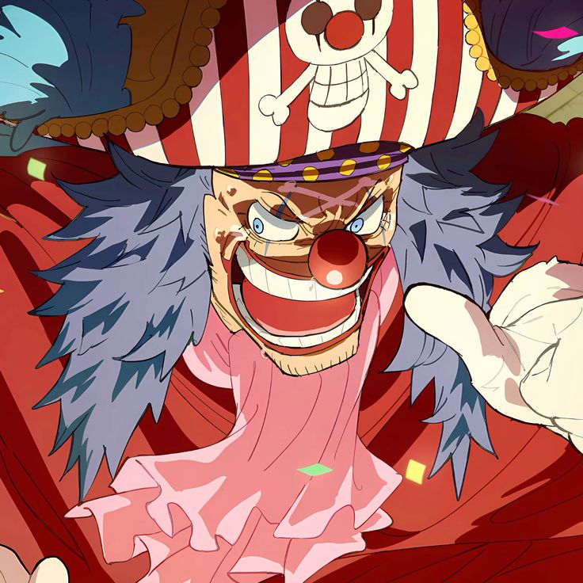
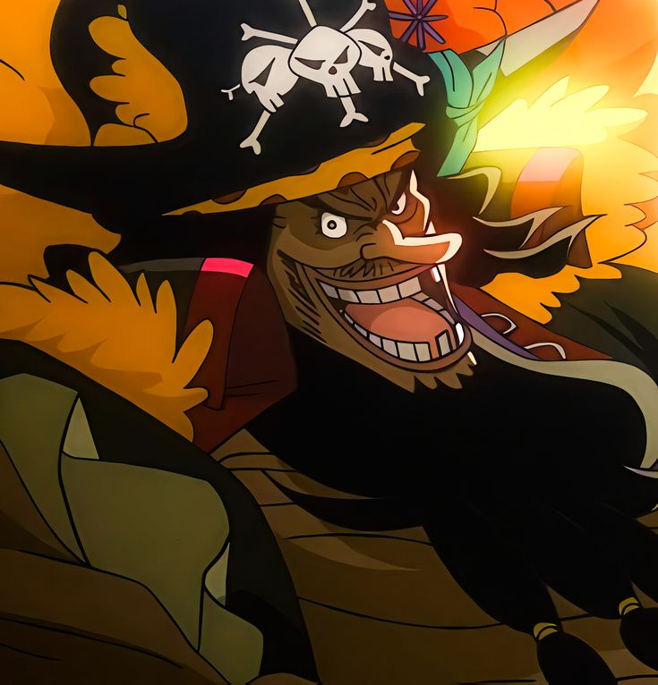
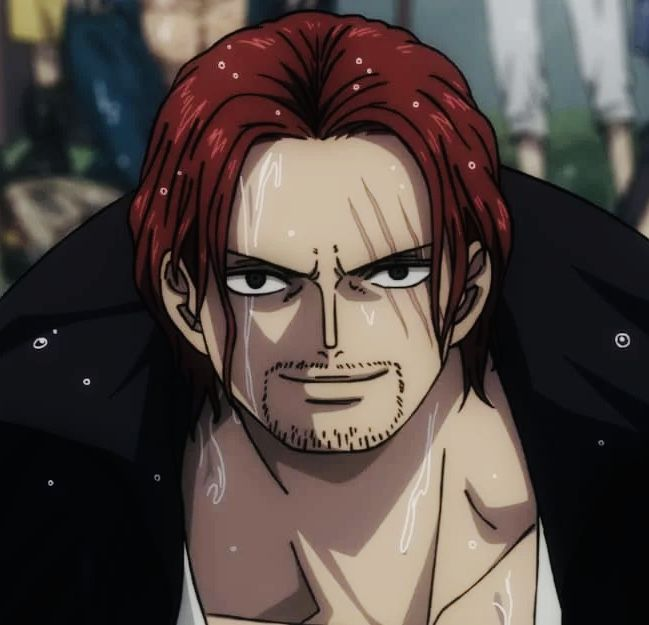

In One Piece, the "Four Emperors of the Sea" (Yonko) are the four most powerful pirates in the world, each commanding vast territories and fleets.
Here's a brief description of each:

(Monkey D. Luffy):The protagonist of One Piece, Luffy becomes one of the Emperors after his rise in power. He is the captain of the Straw Hat Pirates and has a goal of becoming the Pirate King. Luffy's strength lies in his Devil Fruit ability, the Gum-Gum Fruit, which grants him elastic powers, along with his indomitable will and leadership.
Originally a member of Gol D. Roger's crew and a long-time rival of Luffy, Buggy has somehow risen to the rank of Emperor due to his unpredictable nature and alliance with powerful pirates. He has the power of the Bara Bara no Mi (Chop-Chop Fruit), which allows him to split his body into separate parts and control them independently.
(Marshall D. Teach): Blackbeard is a ruthless and cunning pirate, originally a member of Whitebeard's crew before betraying him to become an Emperor. He possesses the power of two Devil Fruits: the Yami Yami no Mi (Dark-Dark Fruit), which controls darkness, and the Gura Gura no Mi (Tremor-Tremor Fruit), which allows him to cause earthquakes. His ambition to conquer the world and his unpredictable nature make him a major threat.
One of the most respected and powerful pirates in the world, Shanks is the captain of the Red-Haired Pirates. A former member of Gol D. Roger's crew, he is known for his mastery of Haki and his strong sense of honor. Shanks played a key role in inspiring Luffy to become a pirate.